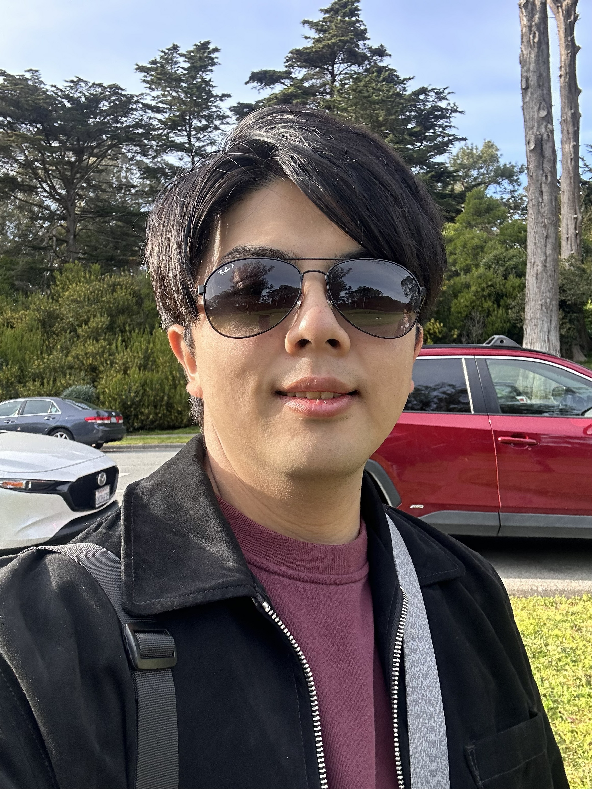

Tim (Ting Hui) Lin
I’m a character animation student based in San Francisco, focused on acting-driven performance and feature-quality animation. For me, the best stories where characters struggle, grow, and fight for something meaningful. I focus on acting and performance, capturing not just how a character moves, but what they are thinking and feeling in each moment.
Building strong poses, clear staging, and emotional beats that the audience can immediately understand. My goal is to create animation that feels honest and alive, where even small actions carry intention and allow the audience to connect with the character.
Alongside animation, I also explore rigging, real-time workflows, and rendering, which helps me approach my work with a broader production perspective. I always dream big when I am planning a shot and try to push myself forward with each shot.
I’m currently seeking opportunities in character animation where I can continue refining my craft and contribute to meaningful, story-driven projects.
My workflow includes Maya (animation), Blender/Maya for VFX support, and Unity for real-time work. I enjoy polishing the last 10%: timing, arcs, spacing, and subtle facial/eye intention.
What I’m Looking For
Internships / junior roles in character animation (feature / games), and opportunities to learn from experienced teams and receive feedback.
Skills
- Character acting, pantomime, dialogue
- Body mechanics, locomotion, weight & balance
- Maya animation workflow (Graph Editor, polish)
- Real-time: Unity animation + GIF / preview workflows